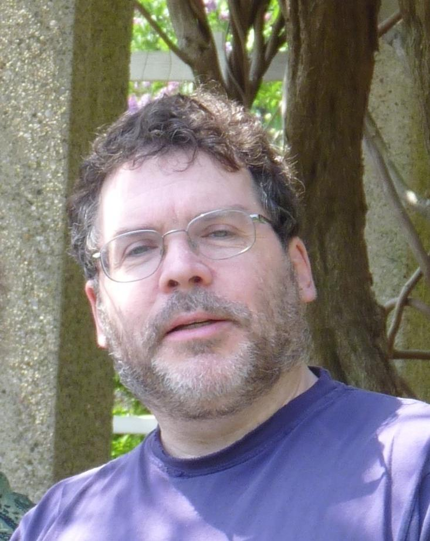
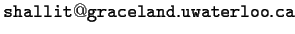

M-W, 1:00 PM -- 2:20 PM, MC 4041. First lecture Wednesday, January 5, 2011.

Jeffrey Shallit
Office: DC 3134
Phone: x34804
E-mail:  (sorry, not a clickable or
cut-and-pastable link, to foil spammers)
Office hours: Tuesdays 9 AM - 11 AM; Thursday 10 AM - 11 PM;
or by appointment, or just stop by when my office
door is open. If my office door is closed, I'm either not in or taking
a nap, so please don't knock.
Also, there will be "virtual office hours" held every Tuesday night from 9 PM to 10 PM on the night before the assignments are due, via AOL Instant Messenger. My userid there is "CS462Prof". Join me there, anonymously or not, to ask any questions you want.
Alex Leong, DC 2505 #3, aleong "at" uwaterloo.ca .
Office hours: 11:30 AM - 12:30 PM on Tuesdays.
CS 360 or CS 365 or equivalent.
Models of computation such as the Turing machine and the random access machine (RAM) are so powerful that it is quite difficult to prove explicit theorems about what they can and cannot compute.
In the late fifties and early sixties, mathematicians and computer scientists began to study simpler models of computation such as the finite automaton and the pushdown automaton. These models of computation were later found to have many practical applications: regular expressions (used in editing and filename specification); parsing and compiling computer languages; specification (LEX and YACC), etc.
Building on CS 360/365, this course discusses more advanced topics in formal languages and automata theory. Topics that we will discuss include: Thue's problem, the Lyndon theorems, combinatorics on words, closure properties of regular sets, the Myhill-Nerode theorem, ambiguity of CFG's, inherent ambiguity, the Chomsky hierarchy, DCFL's, and other language classes.
We will also cover some "real-life" applications including: phases of compilation, top-down parsing, LL(1) grammars, bottom-up parsing, LR(0) grammars, and LR(k) grammars.
There will be 11 problem sets, with problems of varying difficulty. These will be worth 60% of the mark. You should expect to spend 4-5 hours a week on these problems.
The assignments will be handed out and due as follows:
Assignment Number Handed Out Due
----------------------------------------------------------------------
1 Wednesday, January 5 Wednesday, January 12
2 Wednesday, January 12 Wednesday, January 19
3 Wednesday, January 19 Wednesday, January 26
4 Wednesday, January 26 Wednesday, February 2
5 Wednesday, February 2 Wednesday, February 9
6 Wednesday, February 9 Wednesday, February 16
7 Wednesday, February 16 Wednesday, March 2
8 Wednesday, March 2 Wednesday, March 9
9 Wednesday, March 9 Wednesday, March 16
10 Wednesday, March 16 Wednesday, March 23
11 Wednesday, March 23 Wednesday, March 30
Hand your assignments in during class.
Late policy:
solutions to problem sets will be handed out in the class on the due date;
any assignments received after that time will
receive no credit. Your single lowest mark on an assignment will be
discarded.
If you have questions about how your assignment was marked, please contact the TA first. If you are still not satisfied, then you can contact the instructor.
There will be no midterm.
There will be a take-home final which is worth 40% of the mark. It will consist of some easy problems and some challenging ones. Collaboration of any kind is not allowed on the final.
Graduate students will be expected to complete a term project in addition to the other work. For graduate students, the mark breakdown will be: problem sets, 50%; final project, 15%; and final exam, 35%. The project involves reading papers from the literature about a topic in formal languages or parsing of your choice, and then writing a short (5-15 pages) report on what you have learned.
You are permitted to discuss general aspects of the problem sets with other students in the class, but each person should hand in his/her own copy of the solutions. Plagiarism - using outside sources without documentation - will be dealt with severely. Posting problems on Internet bulletin boards, chat groups, newsgroups, etc. and requesting hints or solutions is not permitted.
Any use of outside sources (people, books, articles, etc.) must be documented in anything you hand in for this course. You are welcome to use outside sources, but remember that the goal is to learn: you should try to solve the problems on your own first. When in doubt about whether you need to cite something, err on the side of caution.
The Mathematics Faculty standard penalty for cheating on assignments is a grade of -100% for the assignment, with a minimum deduction of 5% from the final course mark. See the document Cheating and the Student Academic Discipline Policy for more details.
There is a newsgroup for the course -- uw.cs.cs462. I will use the newsgroup to issue corrections and clarifications to homework assignments and the take-home final.
The course web page has copies of problem sets, hints for getting better marks, errata for the course textbook, cheating policy, and summaries for every lecture.
E-mail to my account gets read promptly, and usually answered promptly.

There's a little more about the book here.